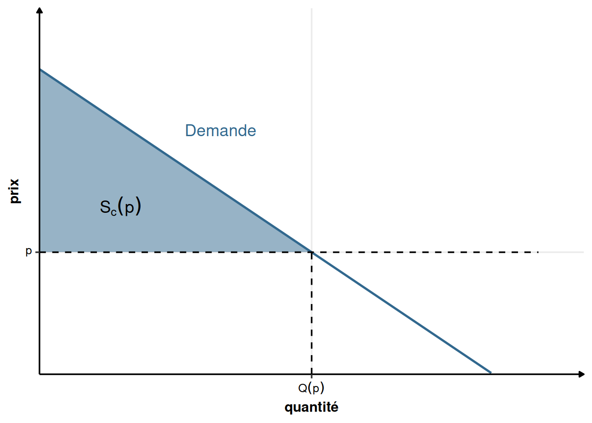
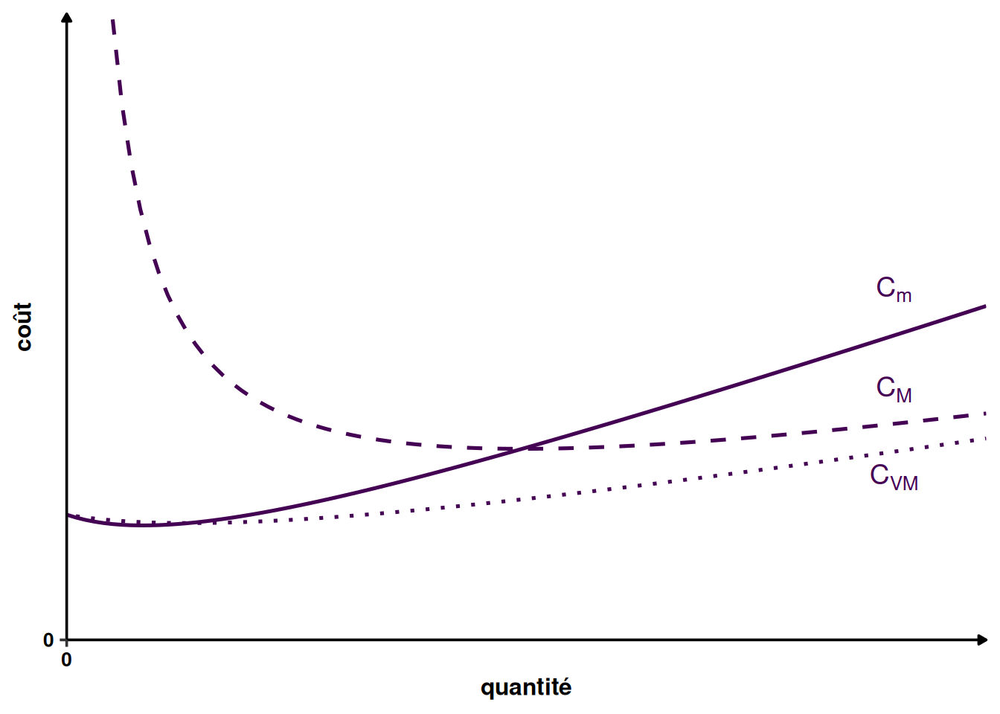
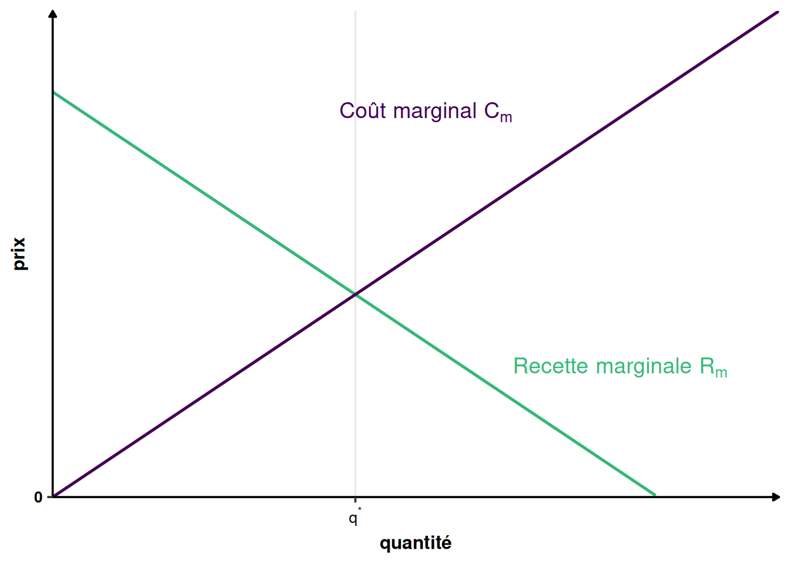
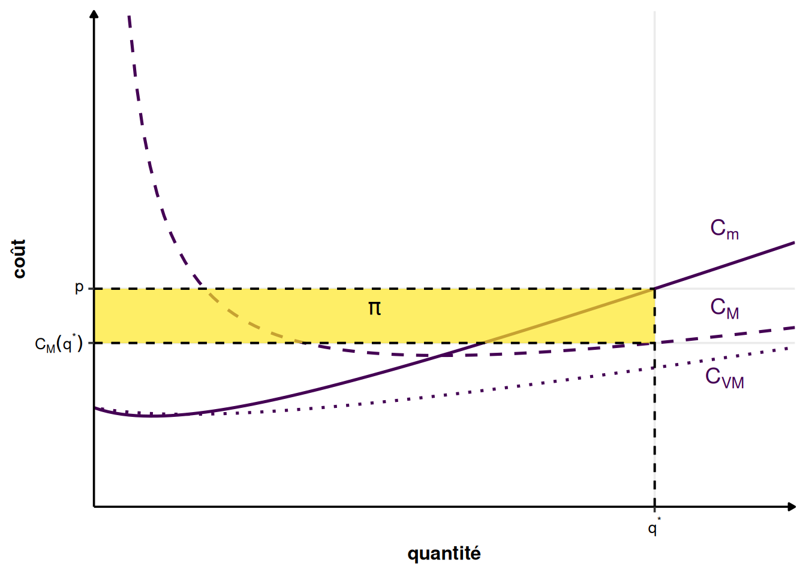
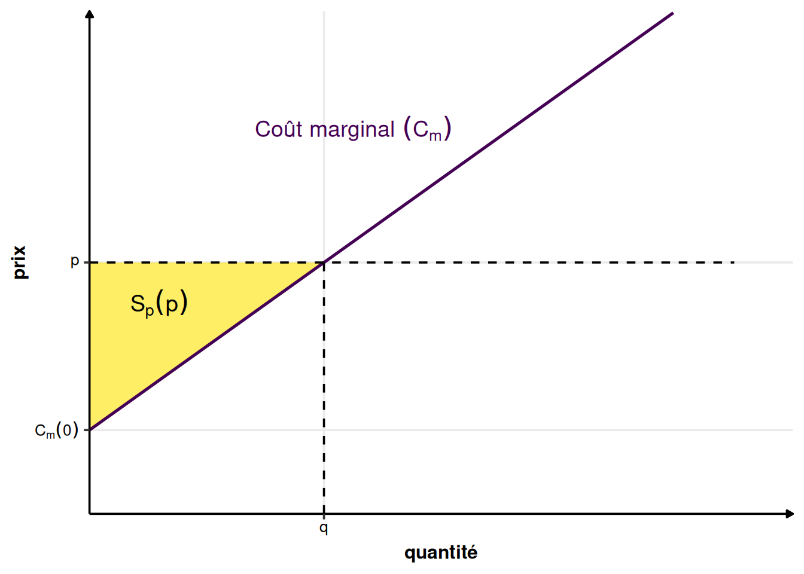
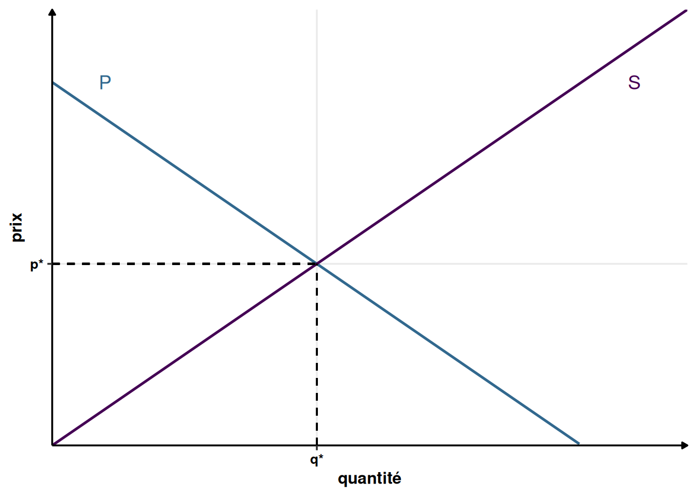
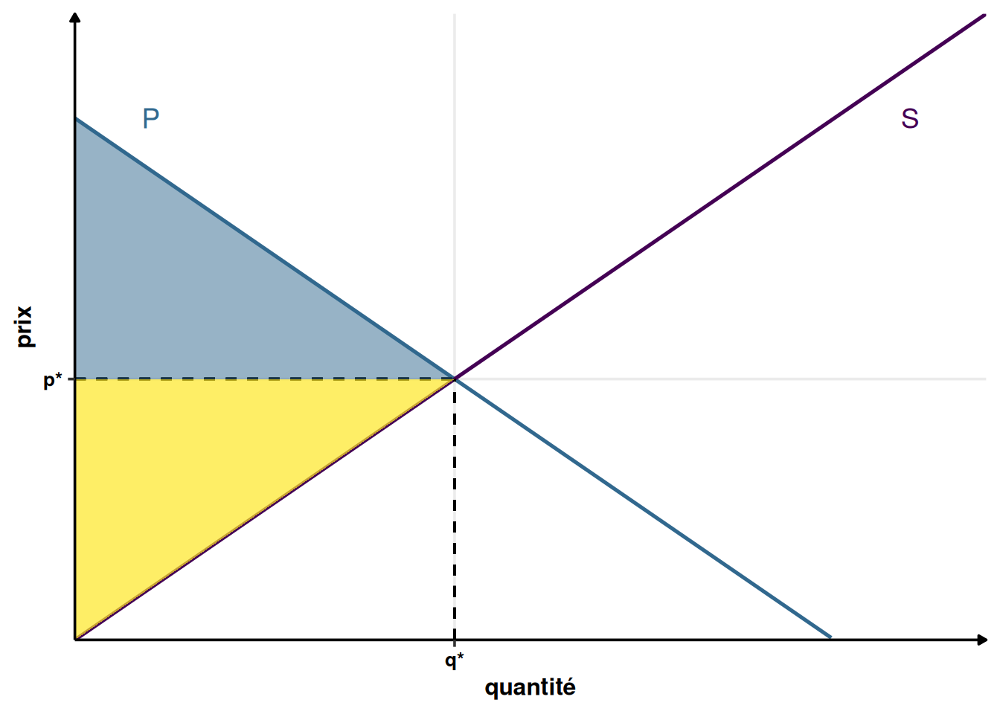
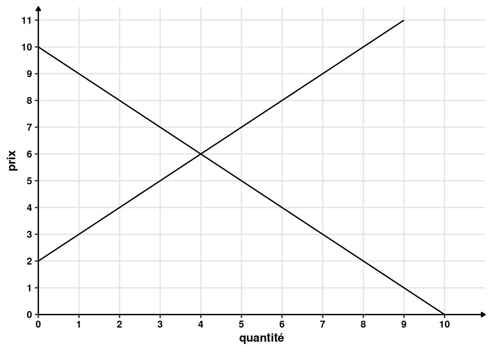
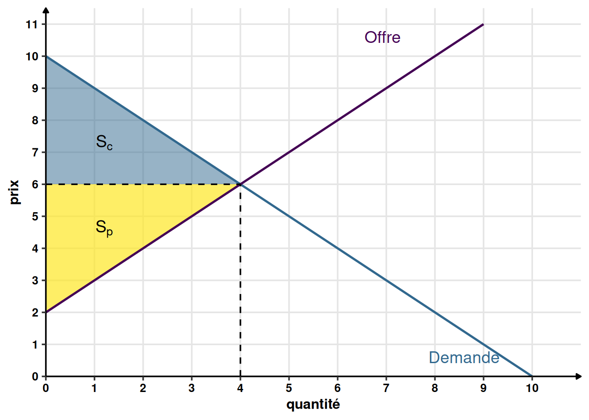

1 Le marché en concurrence pure et parfaite
NoteObjectifs du chapitre
À la fin de ce chapitre, vous saurez :
- énoncer les cinq hypothèses de la concurrence pure et parfaite et dire ce que chacune implique ;
- passer de la fonction de demande à la fonction de demande inverse, et inversement ;
- calculer le surplus des consommateurs pour un prix donné ;
- calculer le coût moyen, le coût marginal et la recette marginale à partir d’une fonction de coût ;
- déterminer l’offre d’un producteur en concurrence pure et parfaite, et calculer le surplus des producteurs pour un prix donné ;
- calculer l’équilibre de marché et les surplus à l’équilibre.
Prérequis : dériver une fonction d’une variable, inverser une fonction affine, calculer l’aire d’un triangle et d’un trapèze.
Définition 1.1 (Le marché) Un marché est un lieu, physique ou virtuel, où se rencontrent l’offre et la demande de biens ou de services. C’est là que les prix sont déterminés par les interactions entre les acheteurs (=consommateurs) et les vendeurs (=producteurs). Tous les biens échangés sur un marché sont parfaitement substituables.
1.1 Les hypothèses de la concurrence pure et parfaite (CPP)
5 hypothèses garantissent l’existence d’un équilibre en concurrence pure et parfaite :
- Atomicité des agents ;
- Information parfaite ;
- Mobilité parfaite des facteurs de production ;
- Homogénéité des biens ;
- Libre entrée et sortie du marché.
Explicitons ce que signifie chacune de ces hypothèses.
Hypothèse 1.1 (Atomicité des agents) L’hypothèse d’atomicité des agents implique qu’aucun agent, individu ou entreprise, n’a d’influence individuellement sur les prix. En d’autres termes, chaque agent est « petit » face au marché et considère le prix du marché comme une donnée qu’il ne peut pas influencer. On dit que les agents sont price-taker sur le marché.
Hypothèse 1.2 (Information parfaite) L’hypothèse d’information parfaite signifie que tous les acteurs disposent de toutes les informations pertinentes pour prendre leurs décisions. Il n’y a, par exemple, pas de coût de recherche d’information.
Hypothèse 1.3 (Mobilité parfaite des facteurs de production) L’hypothèse de mobilité parfaite des facteurs de production garantit l’homogénéité spatiale du prix des facteurs. Les facteurs de production se déplacent où ils sont le mieux rémunérés. Les différences de coûts entre producteurs ne peuvent donc être dues qu’aux différences technologiques entre ceux-ci, et non à une différence de coût des facteurs de production.
Hypothèse 1.4 (Homogénéité des biens) L’homogénéité des biens signifie que tous les biens vendus sur un marché sont parfaitement substituables. Sur un marché donné, tous les biens ont la même qualité. Le consommateur est donc indifférent entre tous les biens vendus. Il n’y a pas non plus d’effet des marques.
Hypothèse 1.5 (Libre entrée et sortie du marché) L’hypothèse de libre entrée et sortie du marché signifie qu’il n’y a pas de barrière à l’entrée dans le marché, ni à la sortie. Concrètement, si les entreprises en place font des profits, de nouveaux concurrents entrent sur le marché, ce qui fait baisser le prix. Si elles font des pertes, certaines sortent du marché, ce qui fait monter le prix. À long terme, le profit des entreprises est donc nul : le prix est égal au minimum du coût moyen.
La violation d’une de ces hypothèses nous fait sortir du cadre de la CPP et confère un pouvoir de marché aux producteurs ou aux consommateurs en place. Dans le cadre de ce cours, nous allons uniquement nous intéresser au pouvoir de marché des producteurs.
1.2 Le consommateur
La modélisation des consommateurs dans ce cours est simple.
Définition 1.2 (Demande individuelle) La fonction de demande d’un consommateur, notée \(Q\), donne la quantité \(Q(p)\) de bien qu’il souhaite acheter à chaque prix \(p\). Lue dans l’autre sens, elle donne pour chaque quantité \(q\) le prix maximal que le consommateur est prêt à payer pour obtenir une unité supplémentaire du bien.
On appelle ce prix maximum le prix de réserve.
Proposition 1.1 (Variation de la fonction de demande) La fonction de demande est décroissante.
L’intuition est la suivante, un consommateur est prêt à payer plus pour la première unité de bien reçue que pour la suivante. Par exemple, le premier litre d’eau dans le désert a beaucoup plus de valeur que le dixième.
Remarque (Demande et demande inverse). La fonction de demande donne la quantité en fonction du prix (\(Q(p)\)). La plupart du temps, nous aurons besoin de la fonction de demande inverse (\(P(q)\)), qui donne le prix en fonction de la quantité. Il faudra donc inverser, au sens mathématique, la fonction de demande pour obtenir la fonction de demande inverse. Sur un graphique quantité-prix, la courbe de demande représente à la fois \(Q(p)\) et \(P(q)\) : on lit \(Q(p)\) en partant d’un prix sur l’axe vertical, et \(P(q)\) en partant d’une quantité sur l’axe horizontal.
AstuceTestez-vous
La demande d’un consommateur est \(Q(p)=12-3p\). Quelle est sa demande inverse \(P(q)\) ?
Réponse
On part de \(q=12-3p\) et on isole \(p\) : \(3p=12-q\), donc \[P(q)=4-\frac{q}{3}\] Vérification : au prix \(p=1\), le consommateur demande \(Q(1)=9\), et on retrouve bien \(P(9)=4-3=1\).
Définition 1.3 (Demande agrégée) La demande agrégée est la somme des demandes individuelles pour chaque niveau de prix : à chaque prix \(p\), on additionne les quantités demandées par tous les consommateurs. Comme pour la demande individuelle, on utilise surtout la demande agrégée inverse, notée \(P(q)\), qui donne le prix auquel les consommateurs achètent au total la quantité \(q\).
Supposons que le prix du bien soit \(p\). Les consommateurs achètent alors la quantité \(Q(p)\) : toutes les unités pour lesquelles leur prix de réserve est au moins égal à \(p\). Pour chacune de ces unités, sauf la dernière, ils paient moins que ce qu’ils étaient prêts à payer : ce gain s’appelle le surplus.
Définition 1.4 (Surplus des consommateurs) Au prix \(p\), le surplus des consommateurs est la somme des différences entre le prix de réserve des consommateurs et le prix \(p\) qu’ils paient, pour toutes les unités achetées. Sur le graphique quantité-prix \((q, p)\), c’est l’aire comprise entre la courbe de demande inverse et la droite horizontale d’ordonnée \(p\), entre \(0\) et la quantité achetée \(Q(p)\). Formellement : \[S_c(p)=\int_0^{Q(p)}\left(P(q)-p\right)dq\]
Remarque. Seule la dernière unité de bien achetée par les consommateurs l’est au prix de réserve. Il n’y a pas de gain à l’échange pour cette unité, mais pour toutes les autres, il y en a, ce qui explique pourquoi il y a un surplus à l’échange, et pourquoi celui-ci a lieu.
En pratique, on n’utilisera jamais la formule avec des intégrales, mais on calculera l’aire du triangle (ou du trapèze) concerné, comme sur la figure 1.1.
NotePour vous entraîner
Fiche 1, exercice 1.1 : demande inverse, prix de réserve et surplus du consommateur.
1.3 Le producteur
1.3.1 Fonctions de coût
En général, un producteur est modélisé par une fonction de production, c’est-à-dire une fonction qui donne les quantités produites de biens en fonction des facteurs de production. On utilise cette fonction de production pour ensuite construire une fonction de coût.
Définition 1.5 (Fonction de coût total) La fonction de coût total, notée \(C\) ou \(CT\), donne le coût total de production de \(q\) unités de bien. Elle se décompose en un coût fixe \(CF\), qui ne dépend pas de \(q\), et un coût variable \(CV\) qui dépend de \(q\) : \[C(q)=CF+ CV(q)\]
Définition 1.6 (Coût moyen) Le coût moyen est le coût de production moyen d’une unité, noté \(C_M\) : \[C_M(q) = \frac{C(q)}{q}\]
Le coût moyen se décompose en un coût fixe moyen \(CF_M\) : \[CF_M(q)=\frac{CF}{q}\] Et un coût variable moyen \(CV_M\) : \[CV_M(q)=\frac{CV(q)}{q}\] On a alors : \[ C_M(q)=CF_M(q) +CV_M(q) \tag{1.1}\]
Preuve. \[ \begin{array}{rcl} C_M(q) &=& \frac{C(q)}{q}\\ &=& \frac{CF + CV(q)}{q}\\ &=& \frac{CF}{q}+\frac{CV(q)}{q}\\ &=& CF_M(q) + CV_M(q) \end{array} \]
Définition 1.7 (Coût marginal) Le coût marginal, noté \(C_m\), est l’augmentation du coût liée à la production d’une unité supplémentaire : \[ C_m(q)=\lim_{\Delta q\to 0}\frac{C(q+\Delta q)-C(q)}{\Delta q}=C'(q) \]
Autrement dit, le coût marginal est la variation de coût total quand la production varie « un tout petit peu » (infiniment peu en fait).
Proposition 1.2 (Variations des courbes de coût) En général, le coût marginal diminue puis augmente, car la productivité marginale est d’abord croissante, puis décroissante.
Le coût variable moyen est d’abord décroissant, puis croissant, pour la même raison.
Le coût fixe moyen est toujours décroissant, car le coût fixe ne dépend pas des quantités produites et \(CF_M(q)=CF/q\) est une fonction inverse.
La décomposition donnée par l’équation 1.1 implique que le coût moyen est d’abord décroissant, puis croissant.
Proposition 1.3 (Relations entre les coûts) Lorsque le coût marginal est inférieur au coût (variable) moyen (\(C_m(q)<C_M(q)\)), le coût moyen diminue. Lorsque le coût marginal est supérieur au coût (variable) moyen (\(C_m(q)>C_M(q)\)), le coût moyen augmente. La courbe de coût marginal coupe donc la courbe de coût (variable) moyen à son minimum.
L’intuition de ce résultat est la suivante : si le coût d’une unité supplémentaire est supérieur au coût moyen des unités précédentes, alors l’unité supplémentaire produite sera plus chère que la moyenne du coût des unités précédentes produites, augmentant de ce fait le coût moyen, et vice-versa. L’illustration graphique est donnée sur la figure 1.2.
Preuve. En son minimum, le coût moyen est tel que \(C_M'(q)=0\). \[ \begin{array}{crcl} &C_M'(q)&=&0\\ \Leftrightarrow & \left(\frac{C(q)}{q}\right)'&=& 0\\ \Leftrightarrow & \frac{C'(q)q-C(q)}{q^2}&=& 0\\ \Leftrightarrow & \frac{C_m(q)}{q}-\frac{C(q)}{q^2}&=& 0\\ \Leftrightarrow & C_m(q)q-C(q)&=& 0\\ \Leftrightarrow & C_m(q)&=& \frac{C(q)}{q}\\ \Leftrightarrow & C_m(q)&=& C_M(q) \end{array} \] La démonstration est similaire pour le coût variable moyen.

AstuceTestez-vous
Le coût moyen d’une entreprise est décroissant. Son coût marginal est-il au-dessus ou au-dessous de son coût moyen ?
Réponse
Au-dessous. Si l’unité supplémentaire coûtait plus que le coût moyen des unités précédentes, elle ferait monter la moyenne (proposition 1.3).
1.3.2 L’offre d’un producteur
Définition 1.8 (Recette totale) La recette totale, notée \(R\) ou \(RT\), est la recette issue de la vente des biens. Pour \(q\) unités de bien vendues, le producteur gagne \(R(q)\), autrement dit, c’est le chiffre d’affaires du producteur (pour ce bien).
Définition 1.9 (Recette marginale) La recette marginale, notée \(R_m\), aussi appelée revenu marginal, est la recette rapportée par une unité supplémentaire de bien vendue. \[R_m(q)=R'(q)\]
Définition 1.10 (Profit) Le profit, noté \(\pi\), est la différence entre la recette totale et le coût total de production : \[\pi(q)=R(q)-C(q)\] Le profit s’appelle couramment le bénéfice.
Hypothèse 1.6 (Programme du producteur) Le producteur choisit la quantité produite de manière à maximiser son profit. Mathématiquement, il résout le programme suivant : \[\max_q\pi(q)=\max_q R(q)-C(q)\]
Théorème 1.1 (Offre du producteur) Le programme du producteur est tel que la quantité optimale produite \(q^*\) égalise le coût marginal et la recette marginale (condition du premier ordre) : \[ R_m(q^*) =C_m(q^*) \tag{1.2}\] Il est aussi tel que la recette marginale croît moins vite que le coût marginal à l’optimum (condition du second ordre) : \[ R_m'(q^*) <C_m'(q^*) \]
Preuve. L’objectif du producteur est de maximiser son profit : \[ \max_q\pi(q)=\max_q R(q)-C(q) \] À l’optimum, et à condition que les fonctions de coût et de recette soient deux fois dérivables (ce qui sera toujours le cas dans ce cours), la condition du premier ordre s’écrit : \[ \pi'(q)=0\Leftrightarrow R'(q)-C'(q)=0\Leftrightarrow R_m(q)=C_m(q) \] On obtient donc l’équation 1.2. Pour obtenir un maximum, la condition du second ordre s’écrit : \[ \pi''(q)<0\Leftrightarrow R''(q)-C''(q)<0\Leftrightarrow R_m'(q^*) <C_m'(q^*) \]
L’intuition pour ce résultat est la suivante. Si la recette marginale est supérieure au coût marginal (\(R_m(q)>C_m(q)\)), alors augmenter la quantité produite rapporte plus que cela ne coûte et donc augmente le profit. À l’inverse, si la recette marginale est inférieure au coût marginal (\(R_m(q)<C_m(q)\)), diminuer la quantité produite diminue plus le coût que la recette du producteur et donc augmente le profit. La situation s’équilibre donc pour \(R_m(q)=C_m(q)\). Si cette égalité n’est pas vérifiée, le producteur peut en effet augmenter son profit en jouant sur la quantité produite.

En concurrence pure et parfaite, un producteur est price-taker. Le prix sur le marché est unique et donné, il vaut \(p\) et ne dépend pas des quantités produites par un producteur. Un producteur vend son bien au prix défini par le marché. La recette totale devient donc \(R(q)=p\times q\), avec \(p\) fixé. La recette marginale est donc \(R_m(q)=R'(q)=p\). En réécrivant l’équation 1.2, on obtient en concurrence pure et parfaite : \[p=C_m(q)\]
Proposition 1.4 (Offre d’un producteur en CPP) En concurrence pure et parfaite, chaque producteur maximise son profit en égalisant son coût marginal au prix du marché : \[C_m(q^*)=p\] À condition que son coût marginal soit croissant en \(q^*\) (\(C_m'(q^*)>0\)).
Définition 1.11 (Courbe d’offre d’un producteur) La courbe d’offre d’un producteur donne, pour chaque prix, la quantité qui maximise son profit.
Proposition 1.5 (Courbe d’offre en CPP) En concurrence pure et parfaite, la courbe d’offre d’un producteur est donnée par la partie croissante de son coût marginal située au-dessus du minimum du coût variable moyen : \[p=C_m(q) \quad \text{si} \quad p\geq \min_q CV_M(q)\] En dessous de ce prix, le producteur ne produit rien.
Le profit du producteur s’écrit alors : \[ \pi(q)=R(q)-C(q)=pq-C(q)=pq-C_M(q)q=q(p-C_M(q)) \] \[ \pi(q)=q(p-C_M(q)) \tag{1.3}\] L’équation 1.3 nous dit que le profit d’un producteur en concurrence pure et parfaite est la différence entre le prix de vente et le coût moyen de production multiplié par le nombre d’unités vendues. Si ce prix est inférieur au coût moyen de toutes les unités vendues, le profit sera négatif. Dans la figure 1.4, le profit est donné par le rectangle jaune.

Remarque (Seuil de fermeture et seuil de rentabilité).
- Le seuil de fermeture est le minimum du coût variable moyen. En dessous, le prix ne couvre même pas le coût variable de chaque unité : le producteur perd moins en ne produisant rien (il ne perd alors que son coût fixe).
- Le seuil de rentabilité est le minimum du coût moyen. Au-dessus, le profit est positif, d’après l’équation 1.3.
- Entre les deux seuils, le producteur produit à perte, car cette perte est plus faible que son coût fixe, qu’il paierait de toute façon.
1.3.3 Surplus des producteurs
Comme pour les consommateurs, on peut mesurer le gain que les producteurs retirent de l’échange lorsque le prix est \(p\). Un producteur qui fait face au prix \(p\) produit la quantité \(q\) telle que \(C_m(q)=p\). Chaque unité lui rapporte \(p\) et lui coûte son coût marginal : il gagne donc \(p-C_m\) sur chaque unité, sauf la dernière. Le surplus de ce producteur est la somme de ces gains, c’est-à-dire l’aire comprise entre le prix \(p\) et sa courbe de coût marginal, entre \(0\) et \(q\) : \[\int_0^{q}\left(p-C_m(x)\right)dx\]
Comme sur la figure 1.5, le coût marginal ne part pas forcément de zéro : la hauteur du triangle est alors \(p-C_m(0)\), et non \(p\). Le surplus d’un producteur n’est pas non plus égal à son profit : il est égal au profit augmenté du coût fixe (la démonstration est donnée en annexe).

Définition 1.12 (Offre agrégée) L’offre agrégée est la somme des offres individuelles pour chaque niveau de prix. On note \(S(q)\) l’offre agrégée inverse, qui donne le prix auquel les producteurs offrent au total la quantité \(q\).
Chaque producteur offre la quantité pour laquelle son coût marginal est égal au prix. L’offre agrégée s’obtient donc en additionnant, à chaque prix \(p\), les quantités offertes par tous les producteurs : c’est la somme des courbes de coût marginal des producteurs. Chaque point de la courbe d’offre agrégée inverse donne ainsi le prix minimal auquel les producteurs acceptent de vendre une unité supplémentaire du bien.
Définition 1.13 (Surplus des producteurs) Au prix \(p\), le surplus des producteurs est la somme des surplus de tous les producteurs. Sur le graphique quantité-prix \((q, p)\), c’est l’aire comprise entre la droite horizontale d’ordonnée \(p\) et la courbe d’offre agrégée inverse, entre \(0\) et la quantité offerte. Formellement, en notant \(S\) l’offre agrégée inverse, obtenue en additionnant les courbes de coût marginal des producteurs, et \(q(p)\) la quantité offerte au prix \(p\), c’est-à-dire telle que \(S(q(p))=p\) : \[S_p(p)=\int_0^{q(p)}\left(p-S(q)\right)dq\]
1.4 L’équilibre de marché
Définition 1.14 (Équilibre de marché) L’équilibre de marché se fait à l’intersection des courbes d’offre et de demande agrégées : au prix d’équilibre \(p^*\), la quantité offerte est égale à la quantité demandée.
Avec les fonctions inverses, le même point s’écrit \(P(q^*)=S(q^*)=p^*\) : à la quantité d’équilibre \(q^*\), le prix que les consommateurs sont prêts à payer est égal au prix auquel les producteurs acceptent de vendre. C’est cette écriture que nous utiliserons dans les calculs.

À l’équilibre, la quantité échangée est \(q^*\) et tous les échanges se font au prix \(p^*\). Les surplus des consommateurs et des producteurs s’obtiennent en appliquant la définition 1.4 et la définition 1.13 avec \(p=p^*\) : ce sont les deux aires de la figure 1.7. Leur somme est le surplus total.

Mise en gardeMéthode : tracer l’équilibre et les surplus
Avec une demande inverse \(P(q)\) et une offre agrégée inverse \(S(q)\) linéaires :
- Tracez la demande inverse à partir de deux points : son ordonnée à l’origine \(P(0)\) et la quantité pour laquelle le prix s’annule.
- Tracez l’offre agrégée inverse à partir de deux points, par exemple \(S(0)\) et sa valeur en une autre quantité. Attention : \(S(0)\) n’est pas forcément nul.
- Au croisement des deux droites, lisez la quantité d’équilibre \(q^*\) sur l’axe horizontal et le prix d’équilibre \(p^*\) sur l’axe vertical.
- Tracez la droite horizontale d’ordonnée \(p^*\), de l’axe des prix jusqu’au point d’équilibre.
- Le surplus des consommateurs est le triangle compris entre la demande et cette droite : \(\frac{1}{2}\times q^*\times\left(P(0)-p^*\right)\).
- Le surplus des producteurs est le triangle compris entre cette droite et l’offre : \(\frac{1}{2}\times q^*\times\left(p^*-S(0)\right)\).
AstuceTestez-vous : lire un graphique
La figure ci-dessous représente la demande inverse et l’offre agrégée inverse d’un marché en concurrence pure et parfaite.
- Identifiez chaque courbe.
- Lisez la quantité et le prix d’équilibre.
- Calculez le surplus des consommateurs et le surplus des producteurs.

Réponse

- La droite décroissante est la demande, la droite croissante est l’offre.
- Elles se coupent en \(q^*=4\) et \(p^*=6\).
- Surplus des consommateurs : \(\frac{1}{2}\times 4\times(10-6)=8\). Surplus des producteurs : \(\frac{1}{2}\times 4\times(6-2)=8\), car l’offre part de \(S(0)=2\) et non de zéro.
AstuceTestez-vous
La demande inverse est \(P(q)=100-q\) et l’offre agrégée inverse est \(S(q)=10+2q\). Calculez l’équilibre et le surplus des producteurs.
Réponse
L’équilibre vérifie \(100-q^*=10+2q^*\), soit \(q^*=30\) et \(p^*=70\). Le surplus des producteurs est le triangle compris entre le prix \(p^*=70\) et la courbe d’offre, qui part de \(S(0)=10\) : \[S_p=\frac{1}{2}\times 30\times(70-10)=900\] Attention : écrire \(\frac{1}{2}\times 30\times 70=1050\) revient à supposer que la courbe d’offre part de zéro.
Proposition 1.6 (Propriétés de l’équilibre en concurrence pure et parfaite) L’équilibre en CPP maximise le surplus total. Tout autre couple (prix, quantité) aboutit à un surplus total plus faible.
L’équilibre en CPP est dit Pareto-optimal, i.e., il est impossible d’améliorer la situation d’un agent sans détériorer celle d’un autre. C’est ce qu’on appelle le premier théorème du bien-être.
Ces propriétés font de la CPP une « référence » par rapport à laquelle on peut comparer les résultats des autres structures de marché.
NotePour vous entraîner
Fiche 1, exercice 1.2, questions 1 à 4 : offre d’un producteur, équilibre de marché, surplus, et effet d’un prix imposé sur le surplus total.
ImportantÀ retenir
- La demande inverse \(P(q)\) donne le prix maximal que les consommateurs sont prêts à payer pour une unité supplémentaire.
- À un prix \(p\) donné, le surplus des consommateurs est l’aire comprise entre la demande inverse et le prix ; le surplus des producteurs est l’aire comprise entre le prix et l’offre.
- En CPP, chaque producteur est price-taker : sa recette marginale est égale au prix, \(R_m=p\). Son offre est la partie croissante de son coût marginal, \(p=C_m(q)\), au-dessus du seuil de fermeture.
- Le profit s’écrit \(\pi=q\,(p-C_M(q))\) : il est positif si le prix dépasse le coût moyen.
- À l’équilibre de marché, \(P(q^*)=S(q^*)=p^*\).
- L’équilibre de CPP maximise le surplus total : c’est la référence pour juger les autres structures de marché.
AvertissementErreurs fréquentes
- Confondre le coût marginal \(C_m\) et le coût moyen \(C_M\) : seule la majuscule les distingue.
- Utiliser la demande \(Q(p)\) quand le calcul demande la demande inverse \(P(q)\), et inversement.
- Dans le calcul du surplus des producteurs, supposer que la courbe d’offre (ou de coût marginal) part de zéro. Si elle part d’une valeur positive, la hauteur du triangle est \(p-S(0)\) (ou \(p-C_m(0)\)), et non \(p\).
- Confondre surplus des producteurs et profit : le surplus d’un producteur est égal à son profit augmenté de son coût fixe.